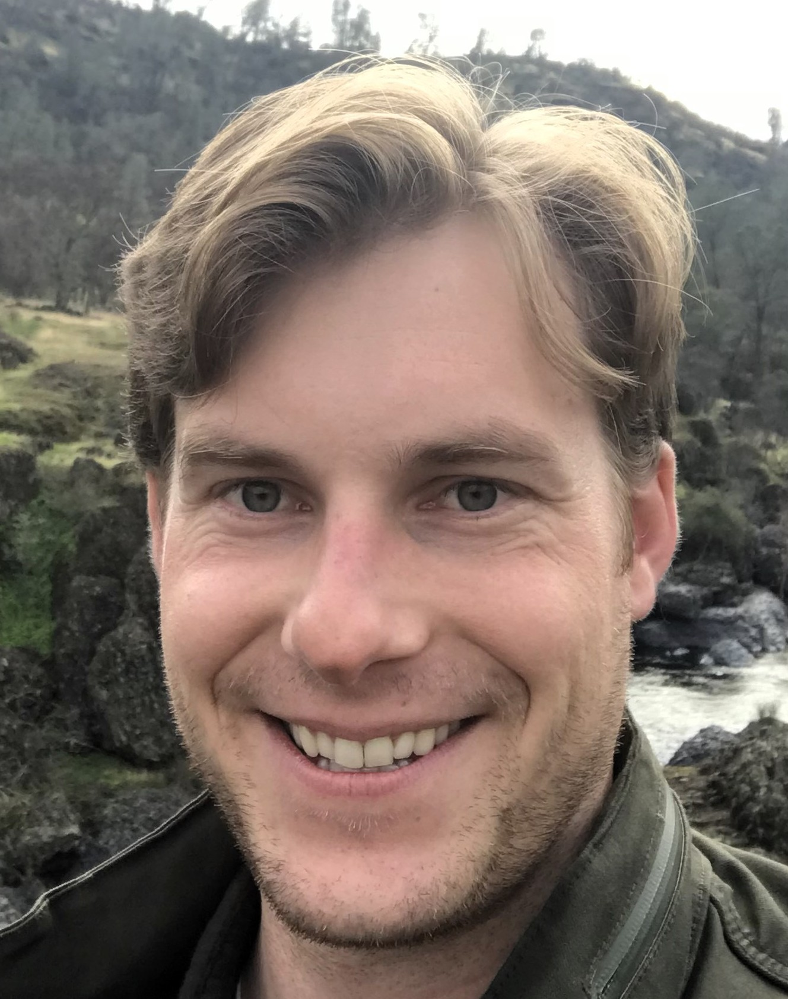

Kevin Kiser
Willamette University MS Data Science
Portland State University BS Data Science
Cal Poly-San Luis Obispo BS Environmental Management
I am a data scientist with a passion for the environment, and I am always looking for innovative ways to use data to make an impact. As Cofounder and Principal Data Engineer at Boiling Frog Games, I’ve had the unique opportunity to apply my skills to game development, blending creativity with technical expertise. Outside of work, I am a poker and card game enthusiast who loves any game that statistics can beat. I am excited to bring my diverse skills to new challenges where data meets real-world impact. Connect with me on LinkedIn or visit me at Boiling Frog Games. Contact at k13kiser@gmail.com.